담아 둔 마음그리고되찾은 시간
평범한 하루에서 출발한 두 편의 광고, 기획부터 편집까지의 기록입니다.
- 노란 조각을 반찬통에 담으면1999년 소풍 체험
- 초록 조각을 틈GO 가방에 담으면현우의 원룸 체험
조각 담기 체험 음악 원할 때만 켜세요. 체험을 닫으면 멈춥니다.
01
1999 도트 2007 3D 2026 실사
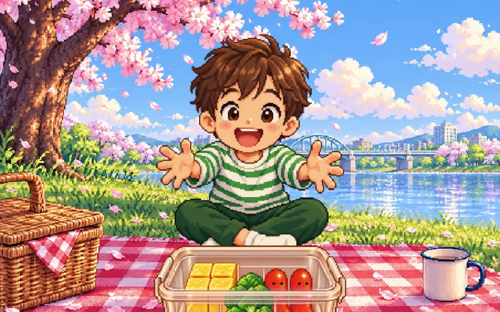
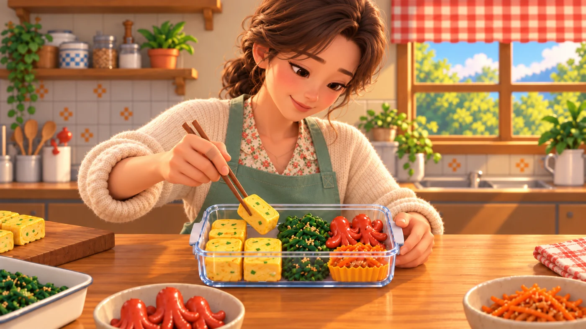
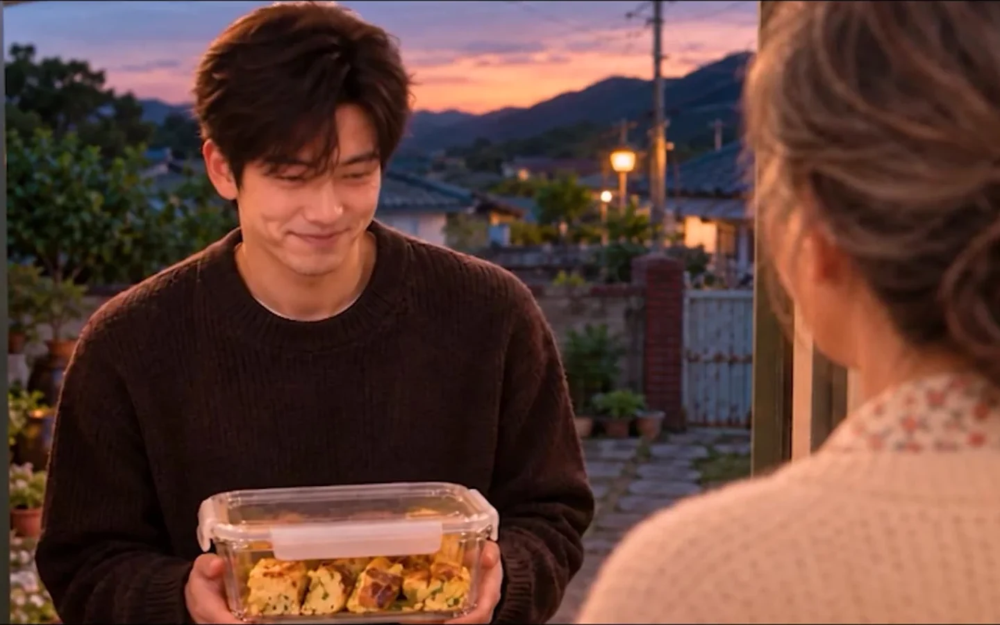
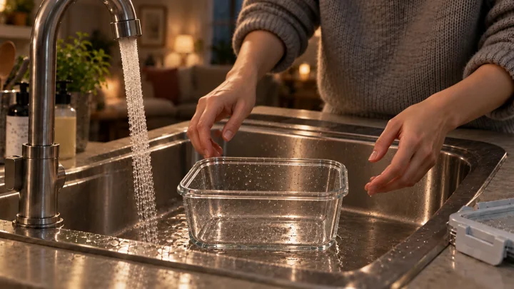
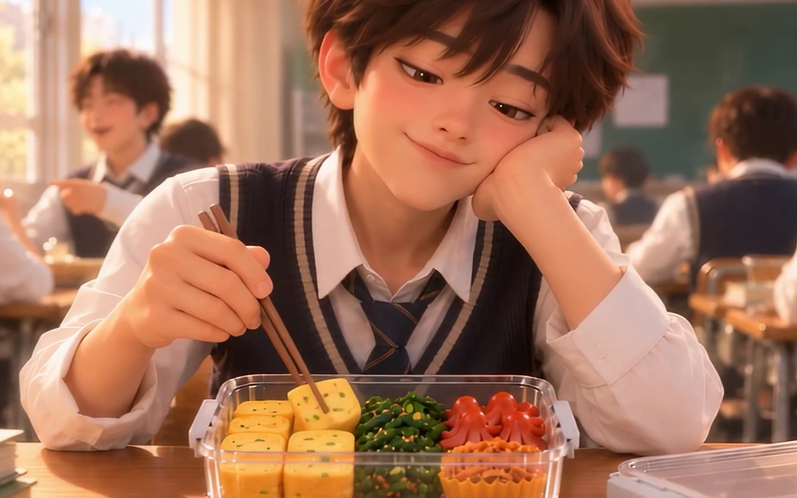
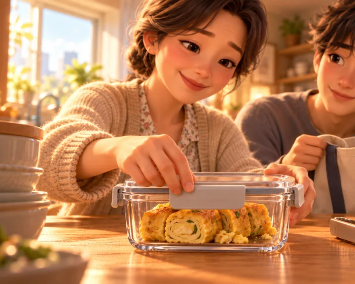
반찬통의왕복
엄마가 채워 주던 반찬통을, 27년 뒤 아들이 채워 돌려줍니다.
/02개인 교육·포트폴리오 작품입니다. 「반찬통의 왕복」은 락앤락의 공식 광고가 아니며, 틈GO는 가상의 서비스입니다.
반찬통의 왕복
늦은밤 퇴근길
퇴근하고 나면, 빨래는 늘 제일 마지막이었다.
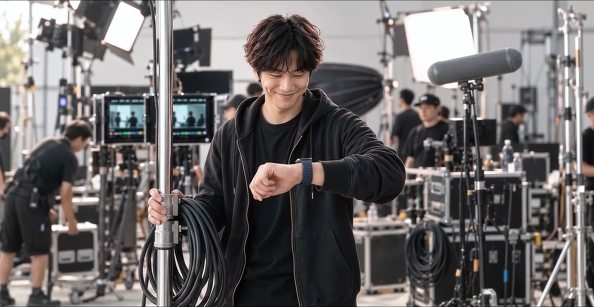
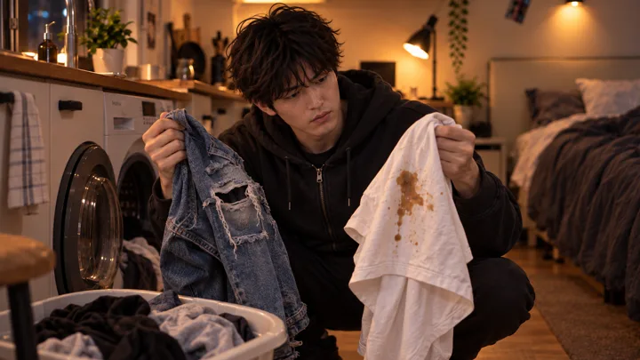
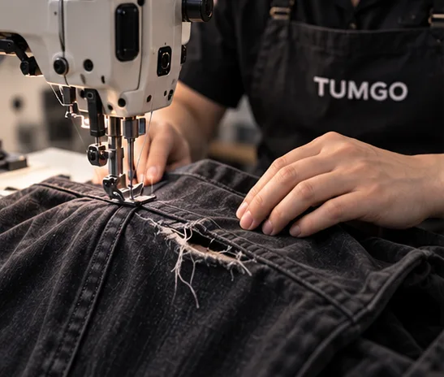
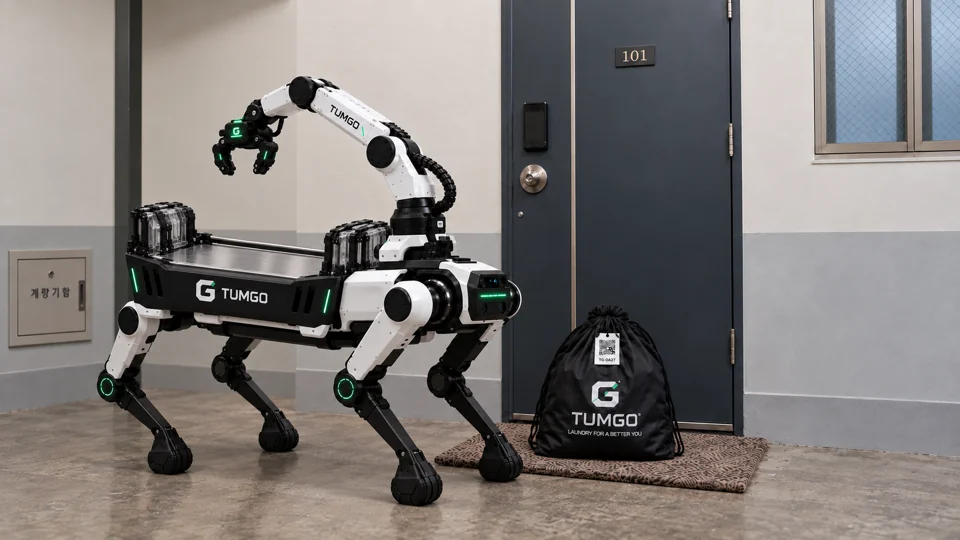
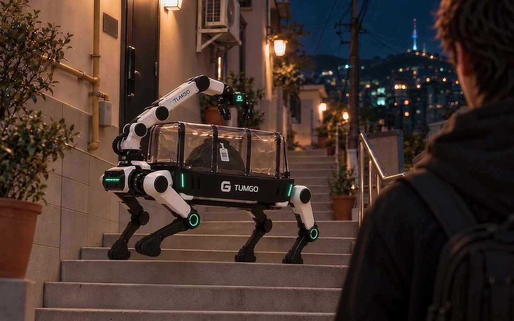
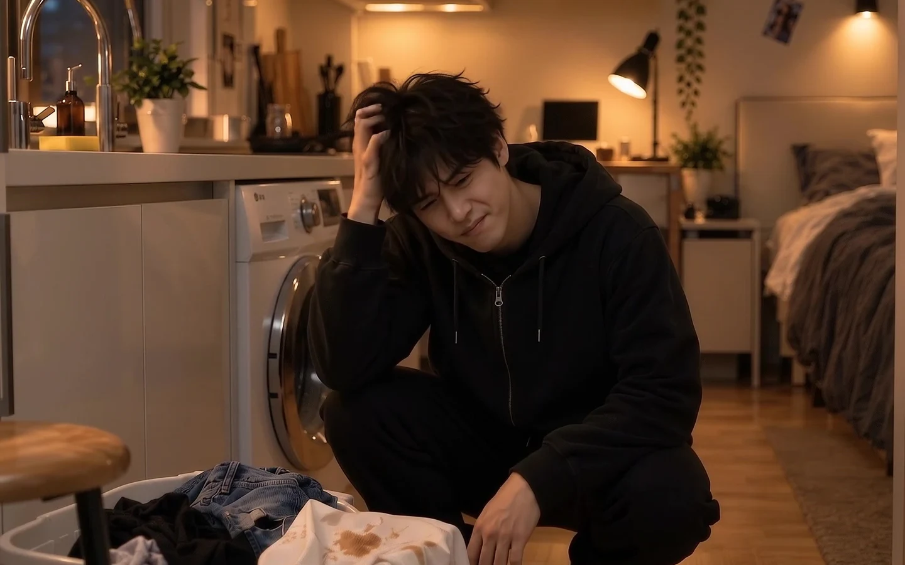
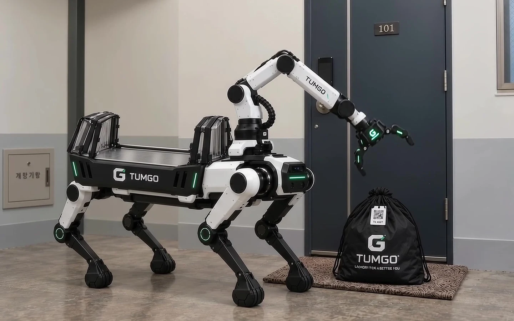
계단에서 처음 만난 로봇
틈GO
문 앞에 두세요. 나머지는 틈GO가.
수거 이후 과정
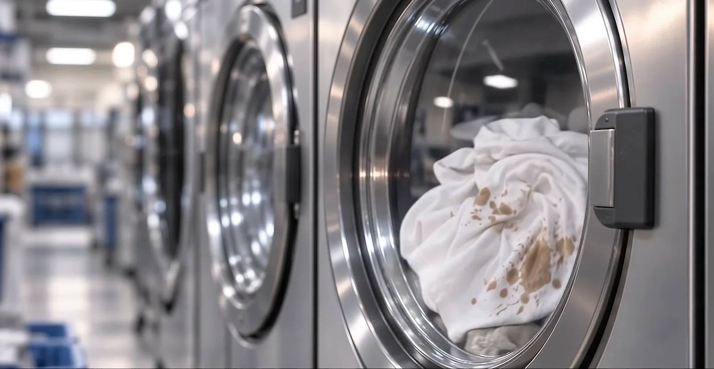
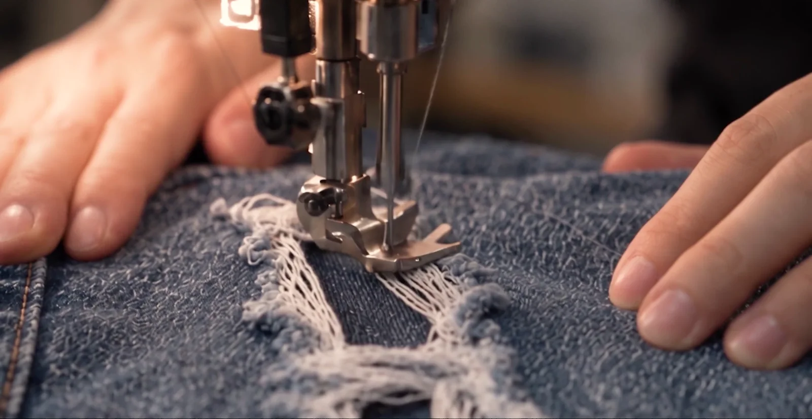
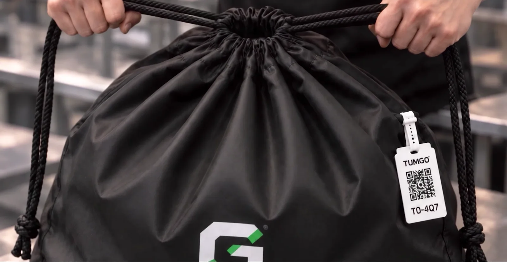
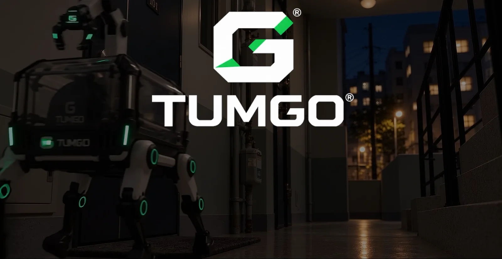
제작한 과정
19컷 그리고 42컷
- 01기획ChatGPT · Claude
- 02이미지 · 영상GPT Image · Seedance 2.5 · Veo 3.1 · Kling · Runway
- 03소리ElevenLabs · Suno · Mirelo · MMAudio
- 04합성 · 편집After Effects · Premiere Pro
기획부터 편집까지,
오로지 혼자서 제작.
dkfksem2@gmail.com